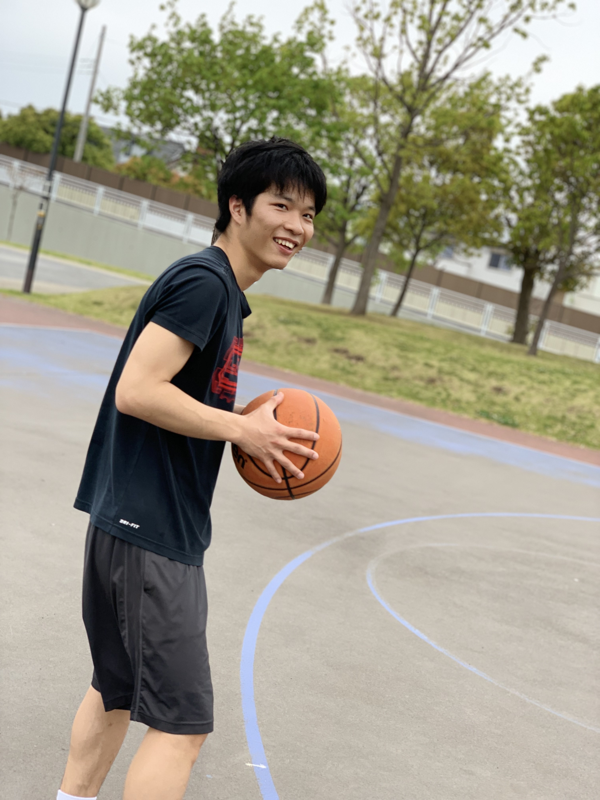

棚本 侑宏（タナモト ユキヒロ）
1998年9月生まれ。山梨県大月市出身。高校生までバスケットボールをやっており、部活一筋で コンピュータとはほど遠い世界にいました。大学進学を機に情報系の学科に進学し、現在まで コンピュータサイエンス領域を広く浅く勉強をしてきました。研究では、その中でも特に興味を 持った機械学習分野に関する研究を行っています。
研究公開資料： http://id.nii.ac.jp/1001/00204204/
趣味